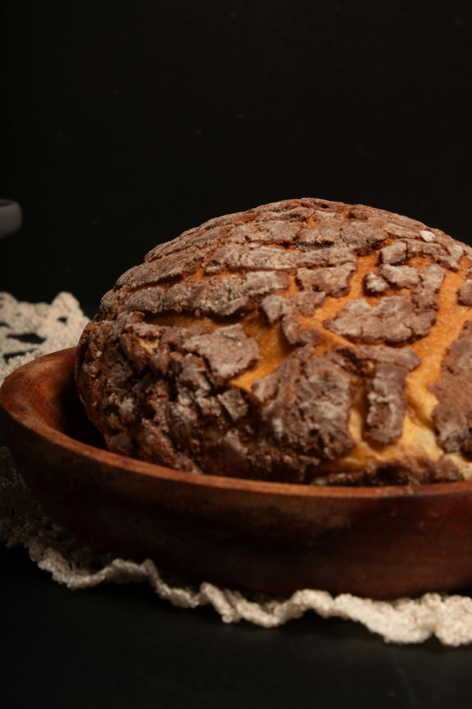

El Paso, Texas — since 1971
Hand-scored pan dulce, three generations in.
Every morning at 4 AM, the same family scores conchas in our kitchen. Recipes carried up from Chihuahua. Same hands. Same ovens.

What we bake
-
Conchas
A sugar-crackled shell over a soft, lightly sweet bread. The shop favorite — and what we score by hand each morning.
-

Rosca de Reyes
The Epiphany ring. Sweet bread laced with candied fruit, baked the first weekend of January.
-
Empanadas
Hand-folded turnovers with seasonal fillings — calabaza in fall, piña in summer, manzana when the apples are right.
-
Pan Dulce Surtido
An assortment: cuernos, orejas, conchitas, and whatever else came out warm that morning.
Visit us
Stop in for a hot concha and a coffee. We bake fresh from before the sun's up until we run out (usually by mid-afternoon).
-
Where
1971 Calle Frontera
El Paso, TX 79905 -
Hours
Mon–Sat: 6 AM – 6 PM
Sun: 7 AM – 2 PM -
Reach us
(915) 555-0144
hola@panaderialafrontera.com